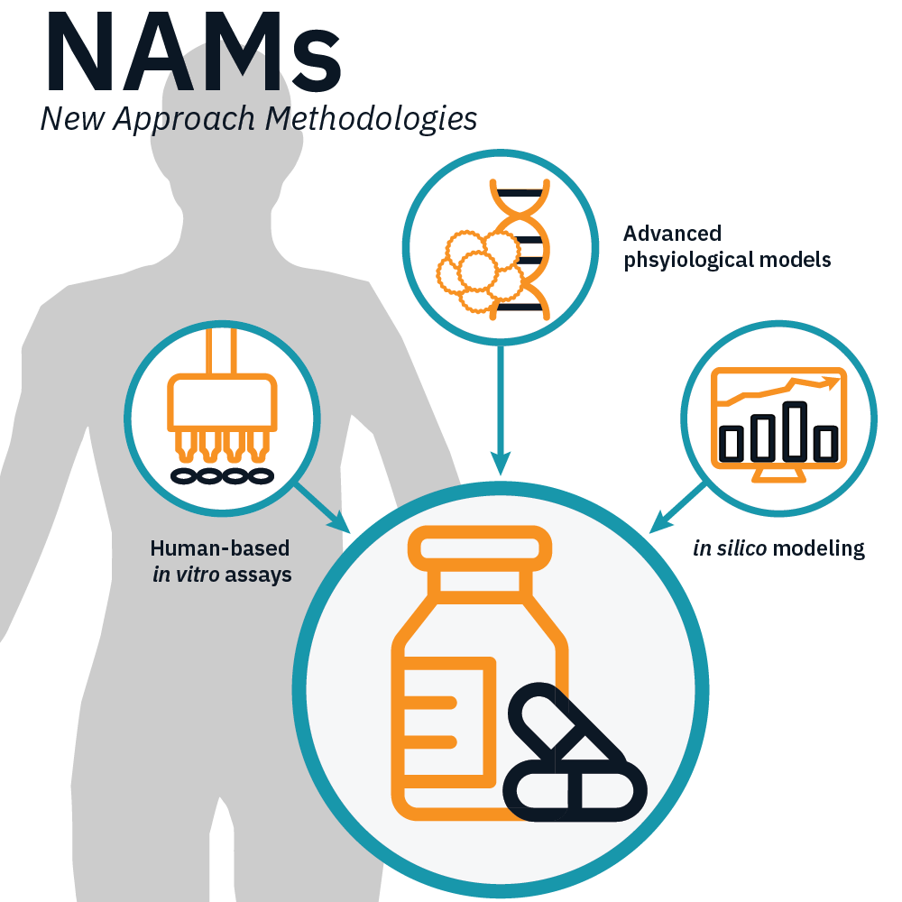
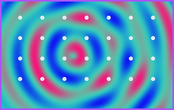

1. De Context
Dierproefvrije & Probabilistische Risicobeoordeling

Probabilistic Chemical Risk Assessment
Van dierproeven naar humane in vitro & in silico voorspelling
Pijlers: (q)AOP's & Physiological Maps
Mechanistisch vastleggen en verklaren van Adverse Outcomes
2. De Kwestie
Van Reductionisme naar Multiscale Emergentie & AI-Integratie
(q)AOP · Moleculair

Sterk reductionistisch, maar lineair
(MIE = Ion channel disruption)
(MIE = Ion channel disruption)
Physiological Map · Cel

Non-lineaire feedbackloops & homeostase
(ook weefsel-IE zoals asbest)
(ook weefsel-IE zoals asbest)

CSD
Emergente Adverse Outcome
Reaction-Diffusion & MEA · Weefsel

Tissue-level emergence
Ruimtelijk-temporele MEA-data
Ruimtelijk-temporele MEA-data